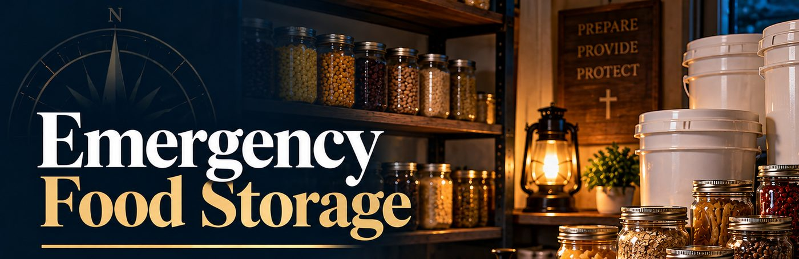

Emergency food storage
Build a pantry your family will actually eat, and keep it fresh by rotating it into everyday meals.
Genesis 41:35–36
What this guide covers
Long-term food storage
Planning a supply that lasts, starting small and building up over time without overspending.
Shelf-stable foods
Foods that keep without refrigeration and still make real meals your family will eat.
Rice and beans
Affordable staples: storing them well, cooking them simply, and adding variety.
Canned goods
Choosing, storing and checking cans, and reading best-by dates sensibly.
Freeze-dried foods
What freeze-dried food offers, what it costs, and how it fits into a household plan.
Food rotation
First in, first out: using your stored food in everyday cooking so nothing goes to waste.
Safe storage containers
Keeping food dry, sealed and protected from pests, heat and light.
Mylar bags and oxygen absorbers
How these work together for dry goods, and which foods they’re suited for.
Building a household emergency pantry
Putting it together step by step, sized to your family and your budget.
Emergency Food Storage
A practical household guide to building a dependable food supply for power outages, severe weather, financial disruptions and other emergencies.
- Print it and keep it with your supplies, so it’s there when the power or internet is out
- Preparedness content is educational and doesn’t replace guidance from professionals or your local emergency management office